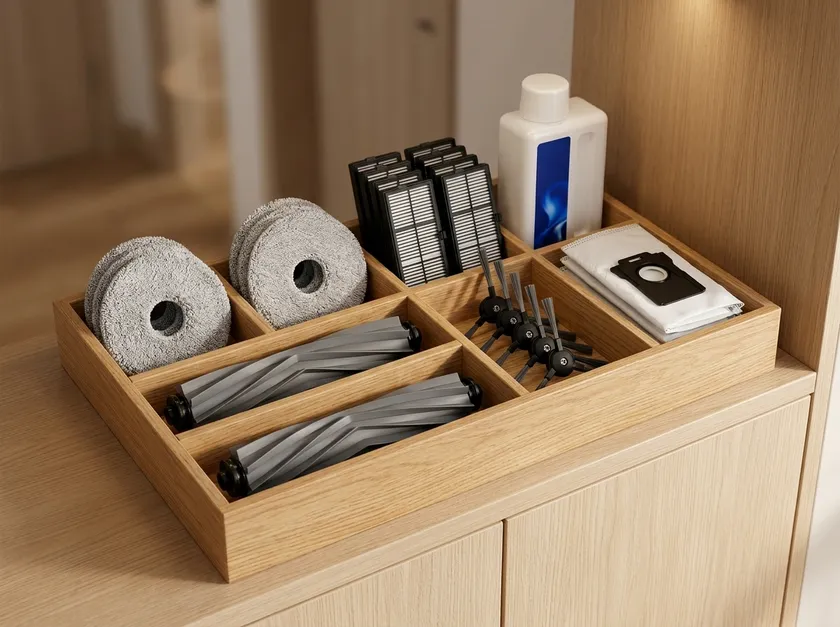

모바 (MOVA)
모바 S70 울트라 롤러 물걸레 건조·흡입력 관리법｜전용 세제 포함 1년 세트
글·구성: 제이상점 · 기종별 1:1 호환 실물 점검 · 교체 주기 비교표 · 스마트스토어 패키지 안내

핵심 관리 · 선택 체크포인트
- 청소 예약은 매일 꼬박꼬박 돌아가는데 요즘 부쩍 모바 S70 울트라 롤러 청소 뒤 베란다·주방 타일 경계에 물기가 남거나 원통형 롤러 안쪽에 습한 냄새가 차오르는 증상 때문에 신경 쓰이셨나요?
- 냄새와 흡입력 차이를 만드는 모바 S70 울트라 롤러 교대 케어 포인트: 실사용 만족도를 가르는 핵심 부위는 단연 장폭 원통형 극세사 롤러 물걸레 튜브와 화이트 테두리 다크그레이 사각 필터·전용 세제입니다.
- 모바 S70 울트라 롤러 냄새·흡입력 복원 부위별 점검 기준표: 번거로운 분해 수리 전에 아래 세 가지 핵심 구간만 순서대로 교대 점검해 주셔도 바닥 뽀송함과 집진 효율이 눈에 띄게 달라집니다.
- 여분 교대가 편해지는 모바 S70 울트라 롤러 기간별 옵션 선택 가이드: 원통형 롤러 걸레는 두툼한 극세사 층이 수분을 머금고 회전하므로 예비 롤러 튜브와 번갈아 말려 쓸 때 수명도 길어지고 위생도 훨씬 뛰어납니다.
- 현재 대표 구성 기준가 82,500원대(옵션·할인 혜택에 따라 스토어 결제 화면 기준 상이)로 운영 중이니 우리 집 청소 주기와 남은 재고를 대조한 뒤 제이상점 모바 S70 울트라 롤러 스마트스토어 상세 옵션에서 가장 실속 있는 구성을 선택해 보세요.
실물 부품 디테일 · 관리 구성 이미지




부품 규격 · 점검 기준표
| 집중 관리 포인트 | 모바 S70 울트라 롤러 적용 부품 규격 | 쾌적함 유지하는 실전 교대 루틴 |
|---|---|---|
| 롤러 튜브 수직 건조 팁 | 분리형 장폭 극세사 롤러 슬리브 | 주 1회 롤러를 빼서 손세탁 후 안쪽 코어까지 마르도록 세워 건조 |
| 미세먼지·반려동물 털 케어 | 화이트 테두리 사각 필터 + 블랙 더스트백 | 예비 필터 1:1 교대 사용으로 젖은 필터 장착으로 인한 악취 차단 |
| 세제 포함 vs 미포함 선택 | 가정 내 보유 세정제 잔량 먼저 체크 | 세제까지 한 번에 끝내면 풀세트, 세제가 남았다면 미포함 실속 세트 선택 |
💡 교체 주기가 겹치는 필터·브러시·물걸레·더스트백은 단품 배송비를 여러 번 내기보다 모바 S70 Ultra Roller 기간별 세트(3개월·6개월·1년)로 미리 구비해 두면 물세척 후 24시간 교대 건조까지 끊김 없이 관리할 수 있습니다.
자주 묻는 질문 (FAQ)
Q. 원통형 롤러 물걸레를 본체에서 빼고 끼울 때 뻑뻑하면 어떻게 맞추나요?
A. 측면 홀더의 결합 홈 각도를 수평으로 맞춘 뒤 밀어 넣으면 딸깍 하고 부드럽게 잠깁니다. 억지로 비틀지 말고 양끝 캡에 낀 실밥이나 먼지를 먼저 털어낸 뒤 장착해 주세요.
Q. 1년 풀세트 구매 후 다음번에는 걸레·필터·더스트백 위주로만 보충하고 싶을 땐 어떤 옵션이 좋나요?
A. 세제가 아직 남아 있는 두 번째 주문 시점에는 단가를 낮춘 모바 S70 울트라 롤러 세제 미포함 1년 실속 세트 구성을 활용하시면 훨씬 경제적으로 유지비를 관리하실 수 있습니다.
제이상점 1:1 검수 추천 패키지 · 구매 안내
메인 추천 구성
대표 구성 참고가 82,500원대 (옵션·쿠폰별 스마트스토어 결제 화면 기준)
1년 세트6개월 세트3개월 세트
![[호환] 모바 S70 Ultra 롤러 소모품 걸레 더스트백 1년세트](../../assets/img/mova-s70-ultra-roller-nodet-product-6295d637.webp)
함께 많이 찾는 보충 구성
대표 구성 참고가 70,000원대 (옵션·쿠폰별 스마트스토어 결제 화면 기준)
1년 세트 (세제 미포함)6개월 세트 (세제 미포함)3개월 세트 (세제 미포함)
☑️ 주문 전 확인해 두면 좋은 제이상점 안심 포인트
· 기종별 1:1 전용 규격 검수: 모델명·연식에 맞는 호환·정품 구성을 검수해 오주문 불안을 줄였습니다.
· 해외직배송 미리 주문 팁: 중국 구매대행·해외직배송 상품이므로 마지막 여분 1개를 꺼내 쓰는 시점에 개인통관고유부호와 함께 여유 있게 주문해 두시면 훨씬 경제적인 비용으로 끊김 없이 교체하실 수 있습니다.
· 기종별 1:1 전용 규격 검수: 모델명·연식에 맞는 호환·정품 구성을 검수해 오주문 불안을 줄였습니다.
· 해외직배송 미리 주문 팁: 중국 구매대행·해외직배송 상품이므로 마지막 여분 1개를 꺼내 쓰는 시점에 개인통관고유부호와 함께 여유 있게 주문해 두시면 훨씬 경제적인 비용으로 끊김 없이 교체하실 수 있습니다.
📖 더 많은 가정 내 사용 스토리와 상세 후기가 궁금하시다면
📱 네이버 블로그 모바일 원문 보기 ↗